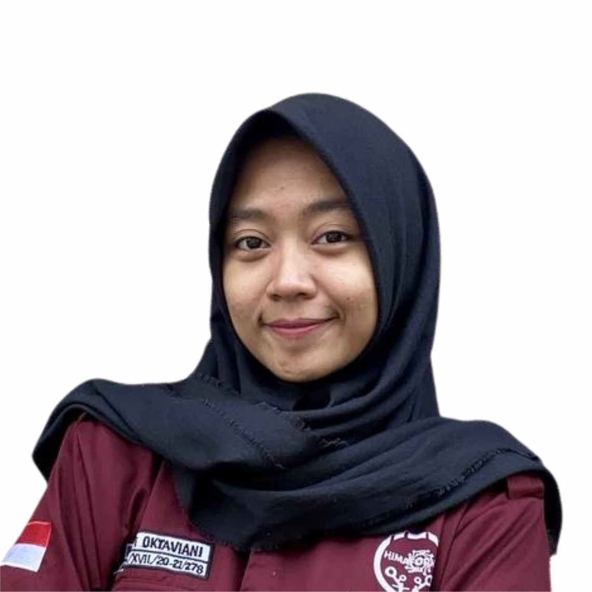
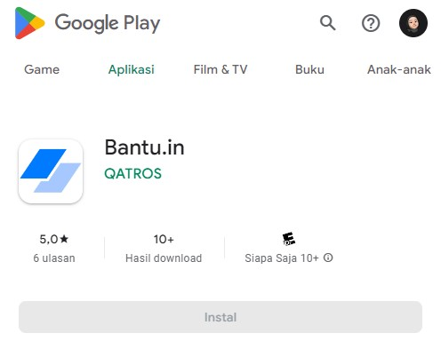

I am a fresh graduate student of the Informatics Engineering Program at Indonesian Digital Technology University. I am interested in Software Quality Assurance and I have experience participated in the MSIB Kampus Merdeka Internship program with the position as a Software Quality Engineer. I also work freelance as a Software Tester which has been running for more than 2 years.


Yogyakarta, Indonesia
Hello,
I'm Putri Dwi Oktaviani
This is my first personal website that I created myself. I made it using HTML and CSS with TailwindCSS framework. I also created this website to add to my portfolio.
About me
Education
MI Negeri 1 Sleman Yogyakarta
2006 - 2012
MTs Negeri 6 Sleman Yogyakarta
2012 - 2015
SMK Negeri 2 Yogyakarta
2015 - 2018
Multimedia Major
Universitas Teknologi Digital Indonesia
2020 - 2024
Informatics Major, IPK 3.99
Work Experience
Digital Marketing Intern
October - November 2018
UD. JDA STORE
Panggung Sari,
Sedan, Sariharjo, Ngaglik, Sleman, D.I Yogyakarta
Graphic Designer
August 2019 - August 2020
Agung Digital Printing
Jl. Babarsari No.5, Catur Tunggal, Depok, Janti, Sleman, D.I Yogyakarta
Freelance Software Tester
September 2021 - Present
PT. ICP Cipta Prima
Jl. Bokohardjo, No 2, Banjeng, Maguwoharjo, Depok, Sleman, D.I Yogyakarta
Software Quality Engineer Intern
February - June 2023
PT. Qatros Teknologi Nusantara
Jl. Sarirejo No.2, Maguwoharjo, Depok, Sleman Yogyakarta
Portofolio

Personal Website
This is my first personal website that I created myself. I made it using HTML and CSS with TailwindCSS framework. I also created this website to add to my portfolio.

Simple Kanban App
This Kanban application is a simple web application that implements the REST API concept as well as the MVC concept. I built it using HTML, CSS TailwindCSS and Golang integrated with PostgreSQL as a database.

Cahsier App (Cart)
This Cahsier App Cart is a simple web application that implements a middleware chain to handle Methods and Authentication using session based token methods and then store data in JSON files.

Bantu.in
I became a Software Quality Assurance Engineer in creating the Bantu.in application project while participating in the MBKM Internship program at PT Qatros Teknologi Nusantara. This project was carried out for 3 months and testing was done by manual testing.